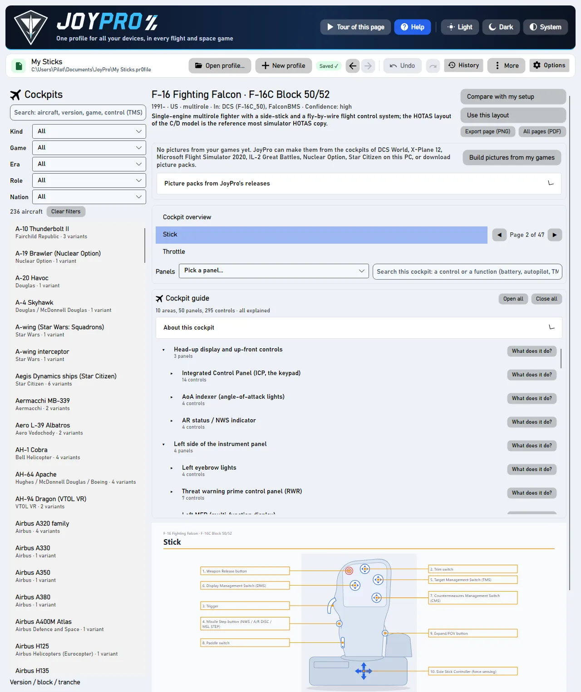

#Filtreleri temizle
DüğmeyazıldıArama kutusunu boşaltır ve “Tür”, “Oyun”, “Dönem”, “Rol” ve “Ülke”yi yeniden "Tümü" yapar: uçakların tüm listesi yeniden görünür.
Kokpitler sayfası, bir uçuş el kitabının kokpit bölümü gibi düzenlenmiş gerçek ve kurgusal kokpitlerin bir başvuru kaynağıdır: bir uçak, sürümünü ve koltuğunu seçin; genel bakışı, HOTAS tablosuyla her tutamak için bir sayfayı (kol, gaz kolu, cyclic, collective) ve her panel için bir sayfayı okuyun. Profilinizde veya oyunlarınızda hiçbir şeyi değiştirmez; hangi işlevin hangi düğmeye gideceğine karar vermenize yardımcı olur ve Bu yerleşimi kullan, kurulum sihirbazını bir uçağın kol ve gaz kolu yerleşimiyle açar.


Numaralı açıklamalarla tutamağın bir çizimi ve HOTAS tablosu: her denetim ve yön için bir satır (basma, uzun basma, basılı tutma), her mod için bir sütun (NAV, A-A, A-G; veya TGP, HUD). Gerçek uçak her düğmeyi böyle kullanır; kendi atamalarınız için iyi bir örnektir.


Kurulu oyunlarınızda uçak varsa Oyunlarımdan resim oluştur, oyunun kokpitini her tıklanabilir denetim numaralandırılmış ve oyunun verdiği adla adlandırılmış olarak çizer. Sahip olmadığınız uçaklar için JoyPro indirilecek resim paketleri sunar; hiçbir oyunda olmayan kokpitler için de üzerinde JoyPro'nun etiketleri bulunan doğrulanmış fotoğraflar.
Bir oyuna hiçbir şey yazılmaz. Kurulumumla karşılaştır, açık profilinizin o oyun ve uçak için hangi işlevleri zaten atadığını HOTAS tablolarında işaretler; böylece neyin hâlâ eksik olduğunu bir bakışta görürsünüz.
Documents\JoyPro2\Cockpits klasörüne yazar; Klasörü aç onu açar.Bir varyantı açtığınızda JoyPro bunlardan var olan ilkini gösterir:
Bölge (sol konsol, ana panel, tavan paneli) > panel ("ENG & JET START control panel") > kontrol (konumlarıyla birlikte her anahtar, düğme ve topuz). Bir kontrole tıklamak onu gösteren sayfayı açar ve açıklama etiketini halkayla belirtir; bir açıklama etiketine tıklamak onu rehberde seçer. Tümünü aç / Tümünü kapat her bölgeyi açar veya kapatır.
CockpitsViewModel.cs (seçici, filtreler, karşılaştırma, yerleşimi kullanma), CockpitsViewModel.Pages.cs (el kitabı sayfaları, dışa aktarma), CockpitsViewModel.Guide.cs, CockpitsViewModel.Pictures.cs, CockpitsViewModel.PicturePacks.cs, CockpitsViewModel.VerifiedPhotos.cs; sayfa görünümü ManualPageView.DB\Cockpits\*.json (uçaklar, varyantlar, kontroller, paneller), DB\Cockpits\drawings, line-drawings, guide, photo-labels (her doğrulanmış fotoğraf için bir dosya).<data>\GameData\CockpitPictures\<game>\<aircraft> içinde (pictures.json, index.json), doğrulanmış fotoğraflar <data>\CockpitPhotos\<aircraft> içinde, bağlantılı fotoğraflar indirme önbelleğinde; fotoğraf yanıtları cihaz fotoğrafı yanıtlarıyla birlikte (cockpit:<aircraft>).engine cockpits (list, search, Bu yerleşimi kullan için get --json, Kurulumumla karşılaştır için compare, PNG/PDF için render, pictures build|status|check, photos). Başvuru: cockpits, privacy.Bu sayfanın arkasındaki, depodan oluşturulan özellik belgeleri:
26 denetim, programın kaynak kodundan okundu: 26 yazıldı, 0 kaynaktaki bilgilerle (araç ipucu, kod yorumu, motor çağrısı), 0 henüz genişletilecek.
Arama kutusunu boşaltır ve “Tür”, “Oyun”, “Dönem”, “Rol” ve “Ülke”yi yeniden "Tümü" yapar: uçakların tüm listesi yeniden görünür.
Araç ipucu Açık profilinizin ilişkisi olan her işlevi işaretler (bu varyantın oyunlarında ve uçaklarında)
Açık profilinizi bu varyantla karşılaştırır: HOTAS tablolarında, ilişkilerinizden birinin kendi oyunları ve uçakları için tuttuğu her işlev, ilişki ve girişle birlikte bir ✓ alır ve bir satır kaç işlevin karşılandığını söyler.
Yalnızca okur; açık bir profil gerekir.
Araç ipucu Bu uçağın kol ve gaz kolu yerleşimini kurulum sihirbazına verir (engine cockpits get ... --json)
Kurulum sihirbazını bu varyantla açar: uçağı öncelik listesinin en üstüne gelir ve plan, işlevlerini uçağın ilk varyantı yerine bu varyantın kolundaki ve gaz kolundaki gibi yerleştirir.
“Uygula”dan önce açık bıraktığınız bir sihirbaz da bunu alır.
Araç ipucu Bu sayfa, çizim stilinizde bir resim olarak (Ayarlar > Çizimler)
Gösterilen sayfayı çizim stilinizde bir PNG olarak Documents\JoyPro2\Cockpits klasörüne, uçak, varyant ve sayfa adıyla kaydeder; aynı adlı bir dosyanın yerine geçer.
“Klasörü aç” onu açar.
Araç ipucu Bu varyantın her sayfası tek bir PDF olarak
Bu varyantın tüm sayfalarını çizim stilinizde tek bir PDF olarak Documents\JoyPro2\Cockpits klasörüne kaydeder.
“Klasörü aç” onu açar.
Araç ipucu Yüklü oyunlarınızın ({0}) kokpitlerini, tıklanabilir her kontrol numaralandırılmış ve oyunun adlandırdığı gibi adlandırılmış olarak oluşturur. Bu bilgisayarda yapılır, oyun verilerinizle birlikte saklanır.
Bu bilgisayarda yüklü oyunlarınızın kokpitlerini çizer; tıklanabilir her kontrol numaralanır ve oyunun ona verdiği adla adlandırılır.
Oyun başına birkaç dakika sürer; resimler hiçbir zaman bir oyun klasöründe değil, oyun verilerinizle birlikte saklanır ve kılavuz sayfaları onları kullanır.
Araç ipucu JoyPro'nun oyundan oluşturduğu kokpit resimlerini indirir (GitHub'daki bir sürüm dosyası), denetler ve oyun verilerinizle birlikte saklar
Önerilen resim paketini JoyPro'nun sürümlerinden bir ilerleme çubuğuyla indirir.
Her paket sağlama toplamına göre denetlenir ve oyun verilerinize açılır; bundan sonra bu uçakların kılavuz sayfaları oyunun resimlerini gösterir.
Teklifi indirmeden kapatır; JoyPro bu oturumda bu paketleri bir daha önermez.
Çalışan resim paketi indirmesini durdurur.
Tamamlanmamış bir paket yüklenmez; zaten bitmiş paketler kalır.
Araç ipucu Yüklü oyunlarınızdaki JoyPro'nun bildiği her uçağın paketleri; önce toplam boyutu görürsünüz
Yüklü oyunlarınızda JoyPro'nun tanıdığı her uçağın resim paketlerini arar ve bu bilgisayarda henüz olmayanları toplam boyutlarıyla önerir; “İndir” indirmeyi başlatır.
Bu oyunun tüm resim paketlerini JoyPro'nun sürümlerinden indirir.
Her paket sağlama toplamına göre denetlenir ve oyun verilerinize açılır; bundan sonra bu uçakların kılavuz sayfaları oyunun resimlerini gösterir.
Araç ipucu Bu kokpitin her fotoğrafını özgün adresinden (ya da web arşivinin kopyasından) indirir, JoyPro'nun kaydına göre denetler ve bu bilgisayarda tutar
Bu kokpitin doğrulanmış her fotoğrafını özgün adresinden indirir, her birini JoyPro'nun kaydına göre denetler ve bu bilgisayarda saklar.
Bu tıklama aynı zamanda bu uçağın fotoğraflarına “Evet” demeniz sayılır; bundan sonra kılavuzda her fotoğraf için JoyPro'nun numaralı etiketlerini taşıyan bir sayfa olur.
Bu kokpitin doğrulanmış fotoğraflarının indirilmesini durdurur.
Zaten indirilmiş ve denetlenmiş fotoğraflar bu bilgisayarda kalır.
PNG ve PDF dışa aktarımlarının gittiği klasörü Explorer'da açar; gerekirse klasörü oluşturur.
“Kurulumumla karşılaştır” işaretlerini gizler: HOTAS tabloları ve rehber kokpiti yeniden atamalarınız olmadan gösterir.
Araç ipucu Önceki sayfa
Kılavuzun önceki sayfasına gider.
Araç ipucu Sonraki sayfa
Kılavuzun sonraki sayfasına gider.
Araç ipucu Her bölgeyi ve paneli açar
Kokpit rehberinin her bölgesini ve panelini açar; böylece her kontrol listelenir.
Araç ipucu Yalnızca bölgeleri gösterir
Kokpit rehberinin tüm bölgelerini kapatır: yalnızca bölgeler listelenir; panellerini görmek için birini açın.
Kokpit rehberinin bu bölgesini veya panelini açar veya kapatır.
Bir arama rehberi süzerken tıklama süzgeci temizler.
Kokpit rehberinde bu kontrolün açıklamasını açar veya kapatır: sade sözcüklerle ne yaptığı, "Büyük resimde", konumları, oyunun ona verdiği ad ve onu atamak için kullanılacak komutlar.
Bu uçağın fotoğraf sorusunu yanıtlar: “Evet” fotoğraf bağlantılarını şimdi yükler, “Hayır” yüklemez, “Kokpitler için her zaman” her uçağın fotoğraflarını sormadan yükler, “Asla” tüm kokpit fotoğraflarını durdurur.
“Hayır”dan sonra “Bu uçağın fotoğraflarını göster”, “Evet” yerine geçer.
Bu fotoğraf yüklenemediyse onu yeniden yükler.
Araç ipucu Fotoğrafın kendisini tarayıcınızda açar (tam boyutta, oradan kaydetmek için)
Fotoğrafın kendisini, bakmak veya oradan kaydetmek için tarayıcınızda tam boyutta açar.
Fotoğrafın yayımlandığı sayfayı tarayıcınızda açar.
Bu kaynağı tarayıcınızda açar; adres araç ipucunda yazar.